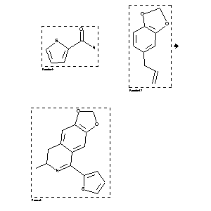

|  |
| FA | RX(1); FLST(1); RX(1) |
Reaction (1 of 1)
| Reaction ID | 68217 |
| Reactant BRN | 110153; 136380 |
| Reactant | thiophene-2-carboxylic acid amide; 5-allyl-benzo[1,3]dioxole |
| Product BRN | 260798 |
| Product | 7-methyl-5-[2]thienyl-7,8-dihydro-[1,3]dioxolo[4,5-g]isoquinoline |
| No. of Reaction Details | 1 |
Reaction Details (1 of 1)
| Reaction Classification | Preparation |
| Reagent | POCl3; benzene |
| Comment | Handbook |
| Citation Pointer | 954247; Journal; Kametani et al.; PHBUA9; Pharm.Bull.; 3; 1955; 263, 265; Chem.Abstr.; 1956; 11343; |
Reference (1 of 1)
| Citation Number | 954247 |
| Document Type | Journal |
| Authors | Kametani et al. |
| CODEN | PHBUA9 |
| Journal Title | Pharm.Bull. |
| Journal/Review Without CODEN | Chem.Abstr. |
| (Series) Volume | 3 |
| Publication Year | 1955; 1956 |
| Page | 263, 265; 11343 |